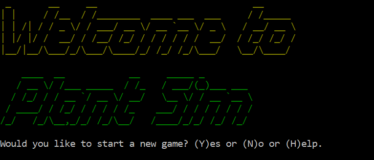

Hello! I'm
Amber Emeny
a.k.a The Ivy Coder
My skills & projects.
-
About Me
First of all, welcome to my website. I hope it's at least a little evident through my design and concept, what kind of person I am. I'd like to tell you a little bit more about myself.
I have always been a bubbly and extroverted person. Initially, the face to face interaction is what drew me to working in retail, until I realised the mental stimulation wasn't enough to keep me interested. My tech-oriented mindset led me to gaming, visual design, and eventually coding. My imaginative insight and desire to experiment has helped me thrive in my coding study and it continues to satisfy my mind like nothing else.
Aside from gaming, I love to design, draw, paint, embroider, make jewellery and look after my plants, of which I have too many. -
Interactive Skills
Communication As one of my core values, effective communication is a skill I pride myself in. I am well practiced in active listenting, believe strongly in respect, empathy and constructive feedback. Teamwork Great teamwork is essential in the tech industry and is something I have plenty of experience in. Conflict managment is a skill I have developed working in retail for many years. Collaboration, mediation, delegation, and negotiating are some of my key strengths. Adaptability I excel in adaptability. My natual curiosity, passion for learning, open-mindedness and refined decision-making all help me in being able to adapt to difficult and ever-changing situations. Work Ethic All of my core values as listed on the home page contribute to my overall work ethic. I connect most with those who share similar traits such as self-confidence, initiative, commitment, dependability and professionalism.
-
Technical Skills
HTML5 - Intermediate to advanced knowledge.
 CSS - Intermediate to advanced knowledge.
CSS - Intermediate to advanced knowledge.
 Ruby - Beginner to intermediate knowledge.
Javascript - Developing knowledge - Watch this space!
Ruby - Beginner to intermediate knowledge.
Javascript - Developing knowledge - Watch this space!
 What I use in my development process:
What I use in my development process:

 Trello, Slack, Stack Overflow and Chrome.
Trello, Slack, Stack Overflow and Chrome.
-
Projects
Plant Sim Ruby Application For my first assessment studying at Coder Academy, we were required to develop an application using the Ruby programming language. I chose to develop a plant simulation game because of my love for plants and tamagotchi-like simulations.  The game provides you with a virtual plant to care for and will eventually either grow into a beautiful sunflower, or wither and die, depending on how well you meet its needs. Find my source files here. Click here to go back to the top. Personal Portfolio This website is actually my second-ever assessment submission for Coder Academy! I designed and coded the website from scratch using HTML, CSS and using SCSS.
 I mean for the website to serve as my main showcase of my ability in website design and development, as well as a gateway to connect to me personally.
Find my website files here.
Click here to go back to the top.
I mean for the website to serve as my main showcase of my ability in website design and development, as well as a gateway to connect to me personally.
Find my website files here.
Click here to go back to the top.